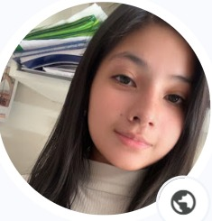

Yadira Alvarez
Estudiante de Diseño y Desarrollo de Software
Instituto: CERTUS
Ciclo: 1.º ciclo
Ciudad: Arequipa, Perú
Correo: Yadira@email.com
Sobre mí
Soy estudiante de Desarrollado Web Front-End | Soluciones Digitales e Inteligencia Artificial. Apasionada por la creación de interfaces web dinámicas y la automatización de flujos de trabajo. Cuento con sólidas competencias en HTML, CSS, JS, gestión de proyectos con SCRUM y despliegue de plataformas web (GitHub Pages). Enfocada en la optimización de la experiencia de usuario y en la aplicación práctica de herramientas de IA para impulsar la productividad y el desarrollo tecnológico.
Mis intereses
- 💻 Tecnología
- 📈 Marketing digital
- ⚽ Deportes
- 📚 Aprendizaje continuo
"Cada día es una oportunidad para aprender algo nuevo".